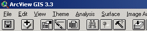
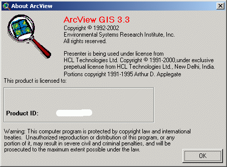
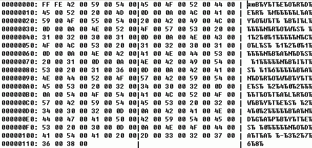

Общие рекомендации по решению проблем в Arcview
Краткая аннотация
Текст статьи
Оглавление
Определите какая версия Arcview установлена, это можно определить по заголовку окна загруженного проекта Arcview:

либо выбрав в меню Help пункт About:

Если у вас установлен Arcview GIS 3.3, установите заплатку для корректной работы в Windows XP (>>>).
Если у вас установлен Arcview GIS 3.2, установите обновление до версии 3.2а (>>>), а затем установите заплатку для корректной работы в Windows XP (>>>).
Убедитесь, что данные, подключаемые в проекты Arcview и сами проекты, хранятся в папках НЕ содержащих пробелов или русских символов. Абсолютно недопустимо хранение данных на Рабочем столе (Desktop'е) или папке "Мои Документы".
Если это так - небходимо перенести данные в папки соответствующие требованиям и перезагрузить их в проекты, если это необходимо.
Если что текстовые файлы, создаваемые например для привязки данных (world-файлы) или заголовков для загрузки растровых данных, создаются в notepad, необходимо иметь в виду, что по-умолчанию им будет присвоено расширение txt, для того чтобы этого избежать, необходимо при сохранении файла задать ему имя таким образом: "n45e136.hdr" и "n45e136.blw" (включая кавычки).
Например: по умолчанию, notepad присвоит файлам имена: n45e136.hdr.txt и n45e136.blw.txt соответственно и попытке загрузить bil в Arcview будет выдаваться сообщение об ошибке: Unable to read standard header.
Убедитесь, что текстовые файлы, создаваемые например для привязки данных (world-файлы) или заголовков для загрузки растровых данных, создаются в кодировке ANSI, а не Unicode. Наприме: если создать файл привязки или заголовка в Unicode, а именно так их попытается создать обычный Notepad, в Encoding которого установлен Unicode, то Arcview, хотя и загрузит их, но показать и привязать правильно не сможет, точно также как не сможет и сконвертировать данных в GRID.
Убедиться, что файл находится в Unicode можно, просмотрев его в шестнадцатиричном виде, например используя Total Commander, так как Unicode - 2-хбайтовый, то каждый символ будет представлен двумя символами, вместо одного. Например, для файла заголовка следующего содержания:
BYTEORDER M |
Hex-код будет выглядеть так:

Убедитесь